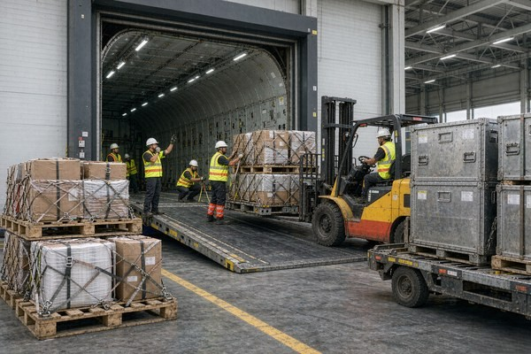
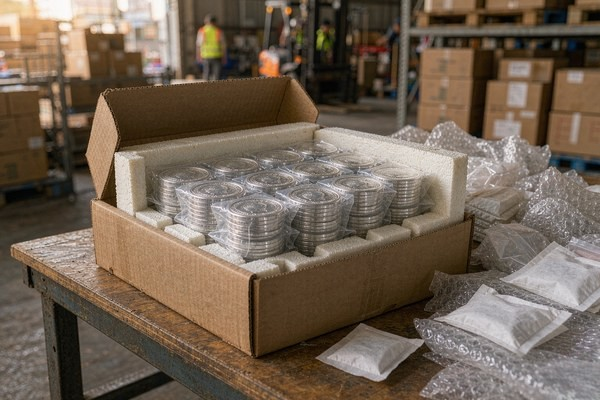

Air Express vs Air Freight vs Sea: Choosing by Weight and Deadline
The first thing to understand about challenge coin freight is that coins are heavy for their size. A thousand two-inch coins weigh somewhere around twenty to twenty-five kilograms once they are bagged and boxed, but they occupy less space than a suitcase. Freight forwarders charge on the greater of actual weight and volumetric weight, and for most products the second number wins because clothes and gifts are bulky and light. Coins are the opposite case: dense, compact, and honest about what they weigh. That single fact makes international shipping of coins considerably cheaper than buyers expect, and it is worth understanding before you start comparing quotes, because a forwarder quoting on actual weight will quote you less than one quoting on volume.
There are three modes, and they are not really competing with each other. They sit on a ladder of cost against speed, and the right rung is set by your deadline rather than by your budget.
| Mode | Typical door-to-door | Best for | The catch |
|---|---|---|---|
| Express courier | 5 to 10 days | Small orders, hard deadlines, samples | Price per kilogram is high, and paperwork errors land directly on you |
| Air freight | 10 to 20 days | Mid-size orders, dates with a little slack | Airport to airport, so you need a forwarder and a pickup at the destination |
| Ocean freight | 30 to 45 days | Large orders, dates measured in months | Port cut-off times, transshipment delays and the arrival of a very large container in a small warehouse |
On cost, the ratio between modes is the kind of number that is stable enough to plan around even though freight rates move: ocean costs a fraction of what air costs per kilogram, and express costs several times what air does. Air is therefore not about saving money, it is about buying calendar. Whether that trade is worth making comes down to one question: what happens on the other side of the date if the coins are late? For a coin handed out at a ceremony, the answer is often that the event happens without them. For a coin stocked for resale, the answer is that nothing much happens.

There is a fourth option that is worth more attention than it gets, and it is the one experienced buyers use most often. If you have a large order and a fixed event date, ship the first batch by air express or air freight to cover the event, and send the balance by sea. You pay premium freight on the smaller half and you stop paying a premium to rescue a date you already know about. If your order is large enough to fill a container, the same logic works at the container level: a partial air shipment first, the full container by sea behind it.
Two freight details catch people out. The first is the ocean cut-off. A vessel does not wait for your cartons. Your goods have to be at the origin terminal, cleared for export and loaded before the container gate closes, typically a day or two before the vessel sails. If you are not tracking that cut-off, a late delivery of the finished coins to the warehouse becomes a missed sailing and a month of delay, and it is entirely avoidable. The second is that ocean freight to the US West Coast is usually faster than ocean freight to the East Coast, because East Coast shipments carry an additional inland leg by rail or truck. If your destination is on the East Coast, that leg belongs in your plan rather than being a surprise at the end of it.
HS Classification and Typical Duty Treatment for Metal Coins
Customs does not classify a challenge coin. It classifies a made object, described by its material and its presentation, and the description you or your supplier put on the invoice is what the officer matches against the physical goods in the carton. This is why the same product can be declared in different ways and why it matters that you know what you are getting.
Three attributes drive the classification, and none of them is the product name. First, the base metal. Copper, brass, zinc alloy, nickel silver, sterling silver and base metal plated with silver all have their own treatment, and a plated piece may well be classified on what it is underneath rather than on the plating you can see. Second, the finish and the surface treatment, which can matter for plated goods. Third, how the piece is presented and used, because some tariff systems treat a commemorative piece differently from an item of personal adornment. Write all three down when you ask a supplier how they will declare the goods, because a supplier who only says challenge coin has not told you anything.
What we will not do on this page is give you a tariff rate. The rate applied depends on the classification, the classification depends on the metal content and the ruling applied, and the rate in force depends on the classification and on the trade measures in effect at the moment of import. Those change, which means any specific percentage you find in a blog post, including this one, is only as good as the date it was written. Ask your broker. Ask the forwarder who will do the entry. Ask the supplier for the classification they intend to use and the reasoning behind it, and if the answer is vague, that is a signal to slow down rather than to speed up.
What you can control is the paperwork, and the paperwork is where the overwhelming majority of import problems actually come from. For a shipment of coins, expect to need at least a commercial invoice describing the goods by material, finish and quantity, a packing list that agrees with the carton count, the transport document, and a certificate of origin where the destination or the trade terms call for it. Here is what each document does and the mistake that trips people up on it.
| Document | What it must contain | The common failure |
|---|---|---|
| Commercial invoice | Precise description of the goods, material, quantity, unit price, total value, origin | A vague product name that the officer cannot match to the goods in the carton |
| Packing list | Carton count, per-carton quantities, weights, dimensions | Quantities that do not agree with the invoice or with the actual boxes |
| Transport document | Bill of lading or air waybill, matching the route | Details that disagree with the commercial invoice |
| Certificate of origin | Where required by the destination rules or the trade agreement | Missing, or issued with a description that differs from the invoice |
| Insurance certificate | Coverage on the declared value, for sea and air shipments | Not arranged at all, leaving the buyer exposed after a loss |
The practical instruction we give buyers is simple: get the landed, duty-paid number in writing before you pay the balance. A supplier who can state the customs value, the duty treatment and the destination charges as one number has done the work. A supplier who quotes a price and says duties are on you has not, and will happily quote you again when the broker comes back with an assessment you did not budget for. Our guide to what challenge coins cost covers how to build a total-cost picture before you start comparing, and our 12-point inspection checklist is the step that has to happen before the coins are sealed into cartons, because a specification dispute discovered at the port is an argument with a deadline attached to it.
Who Pays What: EXW, FOB, DDP Explained in Plain English
Trade terms decide who pays for what and, more importantly, whose problem the goods become at what point. Almost every dispute we have seen in this industry traces back to somebody assuming the other party was handling something the term did not actually give them.
| Term | Seller is responsible for | Buyer is responsible for | Risk passes to buyer |
|---|---|---|---|
| EXW | Making the goods and packaging them | Everything: pickup, export clearance, freight, insurance, import clearance, duty, delivery | At the factory gate |
| FOB | Export clearance, loading onto the vessel | Ocean freight, insurance, import clearance, duty, delivery | Once on the water |
| CIF | Freight and insurance to the named port | Import clearance, duty, delivery, and the risk from the moment of loading | Once on the water |
| DDP | Everything, including import clearance and duty | Nothing beyond receiving the carton | Theoretically on delivery, practically negotiated |
The row that surprises people is FOB. Under FOB the seller has done their part the moment the coins are loaded onto the vessel. From that point, if a container is damaged in transit, if the vessel is delayed, if the goods are held at the destination, that is your cost and your problem. This is not a trap the term sets; it is the normal allocation of risk in international trade and it is why FOB is the term used for the large majority of sea shipments. But buyers who assume the seller remains responsible for the goods until they arrive will be genuinely surprised when something goes wrong, and the surprise is expensive.
The row that deserves more scrutiny is DDP. A genuine DDP supplier arranges the import entry, pays the duty and delivers to your door. The trouble is that many suppliers advertise DDP without having the local capability to do it, and the shipment ends up in a grey zone where a third-party forwarder makes an entry the buyer did not authorise, on a classification nobody in the chain checked. If the duty assessment is wrong, if the shipment is inspected and the goods are held, or if the destination country changes a measure after the fact, the responsibility for fixing it is murky. The cure is not to avoid DDP. The cure is to make it specific: ask the supplier to state in writing which forwarder will make the entry, under which classification, with which duty treatment, and what they will do if the shipment is held. If you need certainty about cost, ask instead for DAP with the duty and tax amount stated separately, so you can see it and compare it.
Whatever term you agree, write it into the purchase order with a line for each obligation rather than a single word. Name the mode of transport, the named place of delivery, who arranges the insurance and at what value, who prepares the invoice and the certificate of origin, and what happens to the cost and the schedule if the goods are held. Our guide to choosing a manufacturer covers the contract clauses worth insisting on more broadly, and our mold fee guide explains the other line item that belongs in the same document, because a die you own and a shipment you do not are both assets that need a name against them.
Packaging That Survives the Trip
Metal coins are tough and coins are also, in the specific and unhelpful sense, hard. They dent other things, they scratch each other, they ring against whatever they touch, and they will happily remove plating from a neighbouring coin in a carton that was closed for six weeks. Packaging is not an afterthought on this product, it is a manufacturing step, and it is the step most often skipped by suppliers who are moving fast.
Three specific things go wrong in transit, and the packaging plan is really a plan to prevent those three things.
Contact damage. Two coin faces rubbing together produce fine scratches, and fine scratches on a polished or plated surface are the difference between a coin that looks premium and one that looks handled. Every coin goes into its own sealed bag, the bags go into rigid tubes or a partitioned inner carton, and no two metal surfaces touch. Do not economise here. A tube of fifty or a divider-packed inner carton costs a fraction of what a scratched run costs in complaints.
Impact and shifting. A carton that moves inside a larger carton, or inside a container that gets stacked and unstacked six times, delivers the same result as a dropped coin: a dented rim, a flattened edge, a knocked-out high point on the relief. Fill the voids so nothing shifts, use a rigid inner box with dividers, and use a strong outer box on a pallet for sea freight. Any experienced packaging line knows that a coin carton that arrives with the coins loose in a sack has failed, even if no individual coin is visibly damaged, because it means the coins moved for weeks.
Moisture and off-gassing. Metal plus humidity is a slow tarnish, and the effect is worst on copper and on silver-plated surfaces. Keep the coins dry, include moisture absorber packs in long sea shipments, and never use PVC sleeves or PVC bubble wrap. PVC outgasses onto metal and leaves a sticky film that has to be cleaned off before the coins look right, and the film itself can dull a plating permanently. Our guide to cleaning challenge coins safely covers that failure mode in detail, along with the general rule that you clean a coin as little as possible.

Two more things that cost nothing and save arguments. Photograph the packed cartons before they are sealed, showing the packing list in the frame, and send those photographs to the buyer the same day. And make sure the packing list matches what is physically in the cartons, carton by carton, because that document is the first thing anybody reads when a shipment arrives and the counts do not line up. A small pile of grain moisture absorbers and a roll of proper packing tape are the least glamorous line items in this whole guide and they do more for the arrival condition of the coins than any decision about freight mode.
A Realistic Door-to-Door Calendar
Here is what the schedule actually looks like when the production is already finished and the coins are sitting in the warehouse, because this is the part buyers most often underestimate and the part that turns a comfortable order into a stressful one.
| Segment | Sea freight | Air freight | Who controls it |
|---|---|---|---|
| Final inspection and packing | 2 to 4 days | 2 to 4 days | Supplier |
| Export clearance and terminal cut-off | 2 to 4 days | 1 to 2 days | Supplier and forwarder |
| Waiting for the sailing or flight | 3 to 10 days | 1 to 3 days | Nobody, it is a schedule |
| Transport | 25 to 40 days | 5 to 10 days | Carrier |
| Import clearance | 3 to 10 days | 2 to 7 days | Broker, but you supply the documents |
| Final delivery | 3 to 7 days | 2 to 5 days | Carrier or forwarder |
| Total, doors to doors | 55 to 70 days | 25 to 35 days |
Two of those rows are worth dwelling on. The clearance row is the one you actually influence, and the reason it blows up is almost always a document that does not describe the goods correctly or does not agree with another document. The waiting row is the one nobody influences, and it is the reason sea freight has a floor of roughly five weeks no matter how fast the vessel moves. That floor is the number to plan backwards from. Our production timeline guide covers the segment before this one, and the honest summary of the two together is that an overseas coin order for a fixed date wants to be ordered roughly three months ahead of the event, which sounds excessive right up until the first time it saves you.
Two calendar habits separate the buyers who are never late from the ones who occasionally are. The first is to fix the date and work backwards, marking every segment and its worst case rather than its average, then adding a buffer of a week at the front for the inspection and packing stage that always takes longer than anyone claims. The second is to agree the shipment plan before the production finishes, not after. Deciding the mode while the coins are being struck is free. Deciding it on the day the cartons are sealed means paying whatever the spot rate happens to be and taking whatever sailing is available, and that is how an order that was supposed to arrive in time quietly misses an event.
And a closing note about where our advice stops and our interest begins. We are a Chinese factory, so everything above is written from the shipping side: we know which cut-offs our forwarders work to, we know which packaging materials are actually available at our warehouse, and we know which document questions our own brokers ask us most often. What we cannot tell you is how your customs authority will classify your specific order or what duty rate will be in force on the day it clears. That part you need a broker for, and any supplier who tells you they can guarantee it is selling you something. If you want a landed price on your actual quantity and destination, send us the details and we will quote the freight and the duty treatment as separate lines so you can see exactly what you are paying for.
Want a Landed Cost, Not a Factory Price?
Send us your artwork, quantity, destination and deadline. We will quote the freight, the duty treatment and the delivery date as separate lines, and tell you honestly whether air is worth it for your order.
Get Free QuoteFrequently Asked Questions
How much does it cost to ship challenge coins internationally?
There is no single number, because the cost depends on the mode, the chargeable weight and the destination. The useful framing is that challenge coins are dense: a thousand 2-inch coins weigh roughly twenty to twenty-five kilograms but occupy less space than a suitcase, so they ship as a small shipment of genuine weight rather than as bulky freight. That makes them considerably cheaper to move than a similar value of apparel or souvenirs, and it makes air freight far more affordable than most buyers expect. Ask for the landed cost on your actual carton dimensions and weight, and compare it against the unit price difference you would have paid locally.
Should I ship challenge coins by air or by sea?
Use the deadline as the primary filter and the quantity as the secondary one. Air express, courier style, suits small orders with a hard date. Air freight, meaning consolidation through a forwarder, suits mid-size orders where a few extra days are acceptable. Sea freight suits large orders with a date measured in months. A common and sensible pattern for a large run with a fixed event date is to ship the first batch by air to cover the event and send the balance by sea.
How long does it take to ship challenge coins from China to the US?
On ocean freight, budget roughly fifty-five to seventy days door to door for a standard order: production, export clearance, waiting for a vessel, the ocean crossing, import clearance and final delivery. Air freight compresses the transport segments and typically lands between twenty-five and thirty-five days door to door. Express courier can move a small shipment in under ten days if the paperwork is already correct. The segment that catches people is import clearance, because it depends on how complete the documents are, and it is the one you can actually control.
What HS code do I use for imported challenge coins?
There is no single code that covers every challenge coin, because the classification follows the actual base metal, the finish and how the piece is presented, not the product name. Copper, brass, zinc alloy and silver coins can land in different headings, and a plated piece may be classified on its base metal rather than on the plating. Ask the supplier in writing which code they are declaring and why, ask your customs broker to review it against the physical samples, and get the code agreed before the shipment sails. If the supplier cannot explain the classification, that is a reason to slow down.
Are there customs duties on imported challenge coins?
The rate depends on how the goods are classified, the classification depends on the metal content and the ruling applied, and the rate applied depends on both the classification and on the trade measures in force at the moment of import. These things change, so treat any specific percentage you find online as something to verify with your broker on your actual shipment. The practical move is to require a landed, duty-paid price in writing so that the number you budgeted is the number you pay, and to confirm who absorbs the duty if the classification changes after the goods have shipped.
What is the difference between EXW, FOB and DDP?
EXW means the seller hands the goods over at the factory and everything else is yours, including export clearance. FOB means the seller clears the export and loads the goods on the vessel, at which point risk transfers to you, so you own the ocean freight, the insurance, the import clearance and the duty. DDP means the seller delivers to your door with everything paid, but in practice many suppliers ship DDP without actually being able to control the import classification or the customs entry, which is exactly where disputes begin. Write the term and the responsibilities into the purchase order rather than relying on a term in an email.
How should challenge coins be packed for shipping?
Bag each coin individually so that no two metal surfaces touch, fill the voids so nothing moves, use a rigid inner carton with dividers so the coins cannot shift, then use a strong outer box on a pallet. Keep the packaging dry and use moisture absorber packs, and never use PVC sleeves, which outgas onto metal and leave a sticky film that has to be cleaned off later. Photograph the packed cartons before they are sealed and keep the packing list with the shipment, because that evidence is what you will need if a carton arrives damaged.
What happens if my challenge coins are held in customs?
A hold is usually caused by paperwork rather than by the goods. The common triggers are a commercial invoice that does not describe the goods in a way the officer can match to the physical shipment, a missing or inconsistent certificate of origin, a value that looks out of line with the order, or a packing list whose quantities do not agree with the carton count. The cure is almost always additional documentation supplied quickly. This is one more reason to inspect the order before it ships and to keep the supplier responsive, because the party that can fix a document problem fastest is the one that packed it.